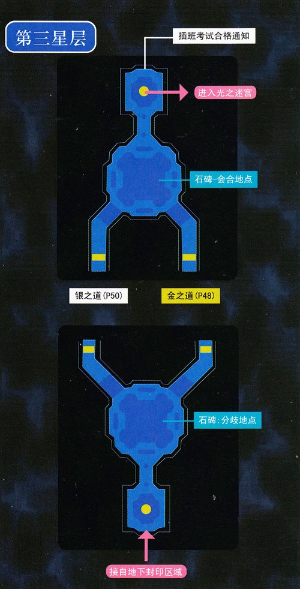

第三话 金之道银之道
☆本话开始之后一直到开始分组，都可以在大树下的书库内获得利贝尔通讯02年前期~02年中期（FC部分）☆
本话开始时自动解放封印石，利贝尔王国王太女科洛蒂娅公主加入。科洛丝拥有很强的回复力和魔法攻击力，S技"光明之环"更是面临团灭的时刻起死回生的保障，因此请在大多数时间把光明之环设为常驻S技。另一个S技"圣星光旋"不再是SC时的鸡肋技能了，在3rd中伤害值与ATS挂钩，在中前期是伤害值最高的S技，如果遇到了天使羊波波，圣星光旋更是能秒杀天使羊的神技。科洛丝加入之后就可以进入【星之门③】了。
【星之门③】主角是约修亚和科洛丝，人物可控后与所有人员对话，会知道SC结束后各位相关人员的活动，之后走到地图中间的地方触发剧情即可。奖励3500mira和大盘料理雅餐"喜悦"。
从第二话BOSS战结束的地方出现的传送阵就会进入第三话的主迷宫——金之道银之道了。第三话的入口处会进行分兵，凯文和莉丝分别带领三个人走金之道与银之道，两条道路的敌人难度差别不大，因此本次分兵主要任务是两支队伍战斗力的均衡。两条道路都会面对战斗力相当强悍的BOSS，所以两队都至少有一个要会使用"中回复术·复"的队员进行专职回复。此时如果有等级过低的队员的话，请去王都练级，由于空轨3rd对于低级打高级有经验奖励加成，所以等级较低的队友也很容易把等级升上来。金之道与银之道的队员装备、回路都是共有的，一条道结束战斗之后把装备回路卸下之后就能让另一支队伍使用了，因此把好的装备和回路都交给其中一支队伍吧。（另一支队伍也不要什么都不带，刚进入路上的时候会直接发生剧情战，难度不大，但是什么都不带的话就会陷入困境。。。）

准备好之后就去第三话的石碑处选择"开始攻略"，之后凯文带队进入金之道，莉丝带队进入银之道。选择之前带有好装备的那支队伍先攻略。为了方便叙述，我们先介绍金之道。
{kind=link}
金之道路上小怪会用一种特殊的攻击方式"魔术锤击"，有可能是我方队员身体膨胀，膨胀后攻击力和速度大幅下降。路上不要忘了调查星之门④。终点处面对BOSS战？莉丝？。此战主BOSS？莉丝？并不显眼，她带来的四个小BOSS才是重点，战场右侧两个蓝色镜子可以反射物理攻击，左侧两个红色镜子可以反射魔法攻击。建议先用魔法攻击消灭蓝色魔镜，再用连锁战技或者S技消灭另两个魔镜，四个镜子消灭后剩下的？莉丝？就没有太大的威胁了。注意打倒之后她会变成拟态莉丝，再打倒之后变成格利摩尔（今后遇到的拟态我方人物基本都是这样的，需要打倒三次才能获胜= =）。这边胜利之后不要着急前进，马上把装备回路都卸下来供银之道的小组使用。
{kind=link}
银之道路上的敌人会用自爆和即死攻击，一定要小心。不要忘了调查月之门③。终点处有石碑，准备好之后前进开始BOSS战。BOSS凯文开场会使用满CP的星杯领域，敌方全员上双层墙。本次BOSS战建议用暗改法：请翻阅星杯手册并给一名角色配出魔法"暗物质改"，该魔法具有将敌人吸引到魔法中心的附加效果，该效果用墙挡不住。同时如果造成伤害了还会有降低MOV的附加效果。所以开场以后那名角色一直放暗物质改，其他角色用其他的范围魔法一起破墙，只要能够全员破墙后再用一次暗物质改将敌方全体吸到后面并附加MOV DOWN状态，敌方的就基本打不到我我方了= =战斗后继续前进与凯文组会合。
解开第三话获得的两个封印石，金和奥利维尔加入。金叔拥有目前全队最高的HP与防御力，喜欢肉搏的玩家可以考虑；奥利维尔是一名很搞笑的角色，这次还有"闺蜜"穆拉在场，会给玩家带来很多乐趣，而且此人的魔法能力同样十分优秀。此时又有两个门能够进入了。
【星之门④】主角是金，进去之后看剧情即可。奖励4000mira和回路阴阳。这个回路玩过SC的都会知道应该给科洛丝使用。
【太阳之门③ 里·武术大会】（普通难度）带着金就能进入了，战斗胜利后获得5000mira和身之理（回路，装备者受到的物理攻击伤害减少，魔法攻击伤害增加）。这个门今后获得了新的道具后可以挑战更高的难度。 点击查看详解
现在去第三话会合地点找宝箱，就会得到"插班考试合格证书"，让科洛丝入队，就能进入月之门③了。
【月之门③】奖励：6000Mira，隼眼（回路，地图上标出敌人的位置）点击查看详解
====第三话 结束====